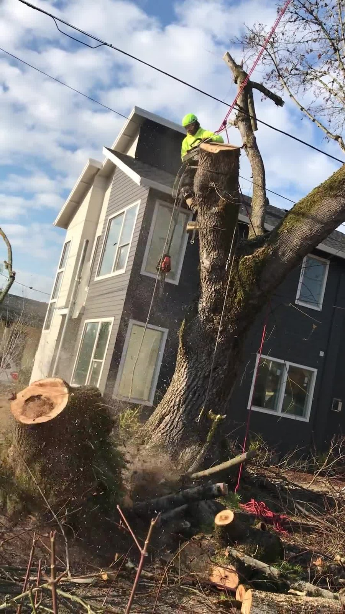
Mid-cut, top of the stem, wood chips still in the air. This is the moment that decides whether a job goes clean — power lines a few feet away, a house a few feet the other direction.
Climbing, rigging, heavy removals, cleanup — this is what the work actually looks like, on real properties around Portland.

Mid-cut, top of the stem, wood chips still in the air. This is the moment that decides whether a job goes clean — power lines a few feet away, a house a few feet the other direction.
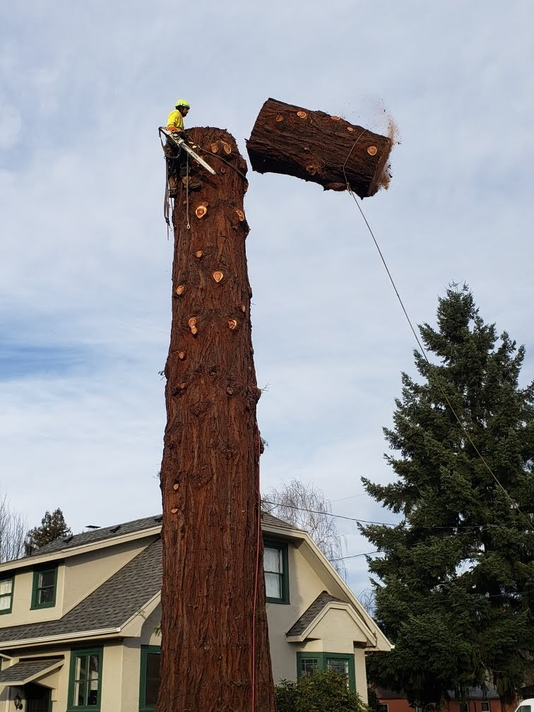
Same cut, next moment — the section swings free on the rigging, exactly where it's meant to go. Nothing about this is left to chance.
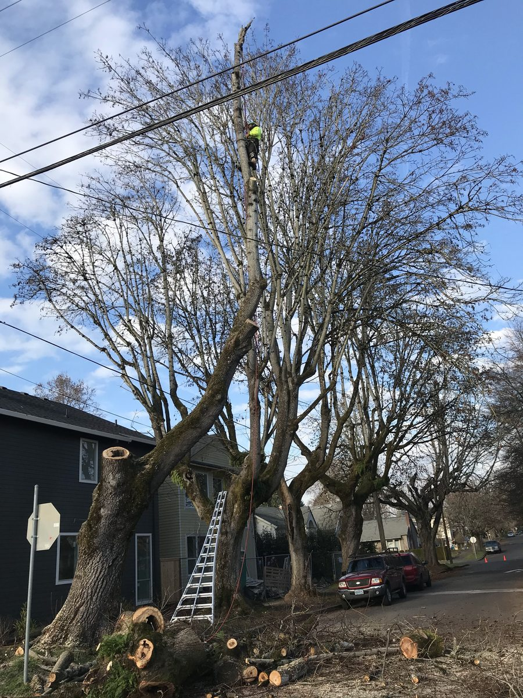
Same story, different hazard. Power lines don't move, so the tree has to come down around them — ladder staged, cones out, nothing left to guesswork.
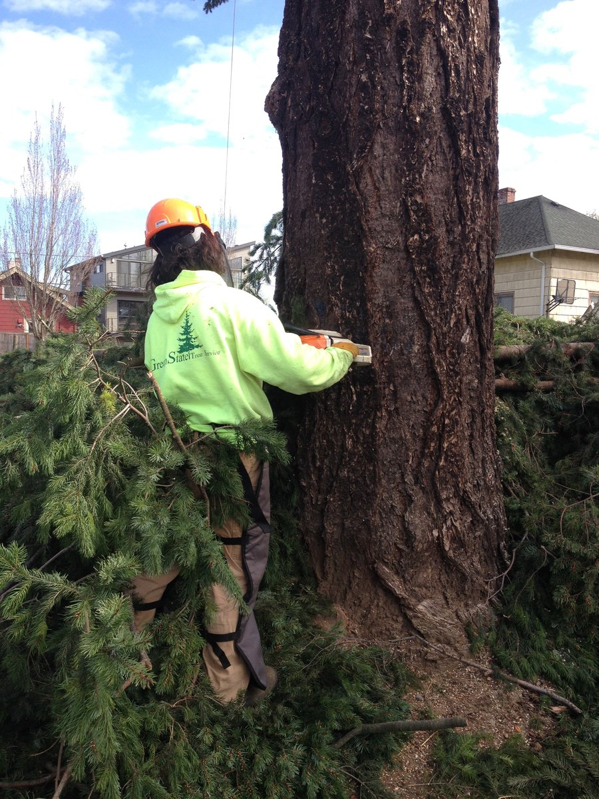
Older job, same company, same approach. The name on the back hasn't changed since this one.
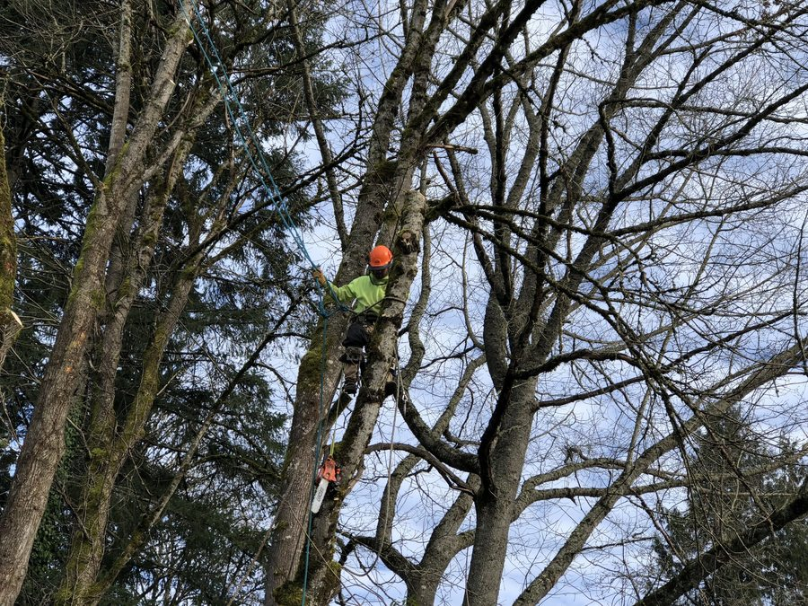
Up in the canopy on a technical removal — full rigging, hard hat, and a chainsaw carried on the hip for the final cuts. This is where most of the skill in the job actually lives.
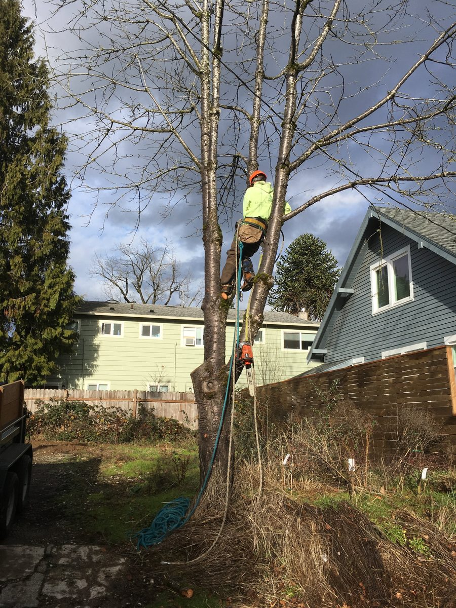
Same job, different angle. Working weather like this is routine — Portland doesn't wait for a clear day to need a tree taken down.
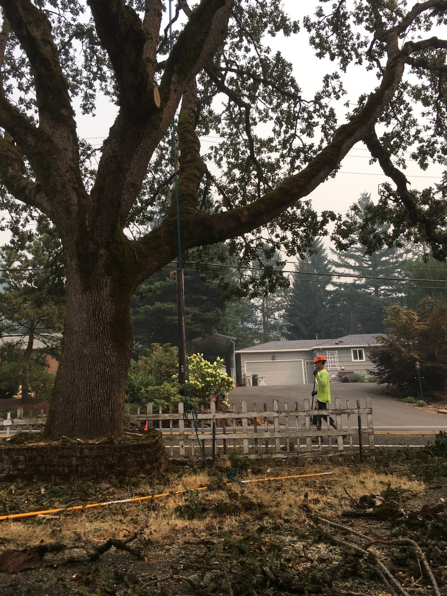
Not every bad-air-quality day is a snow day. Regional wildfire smoke turned the sky orange for this one — the job still had to get done.
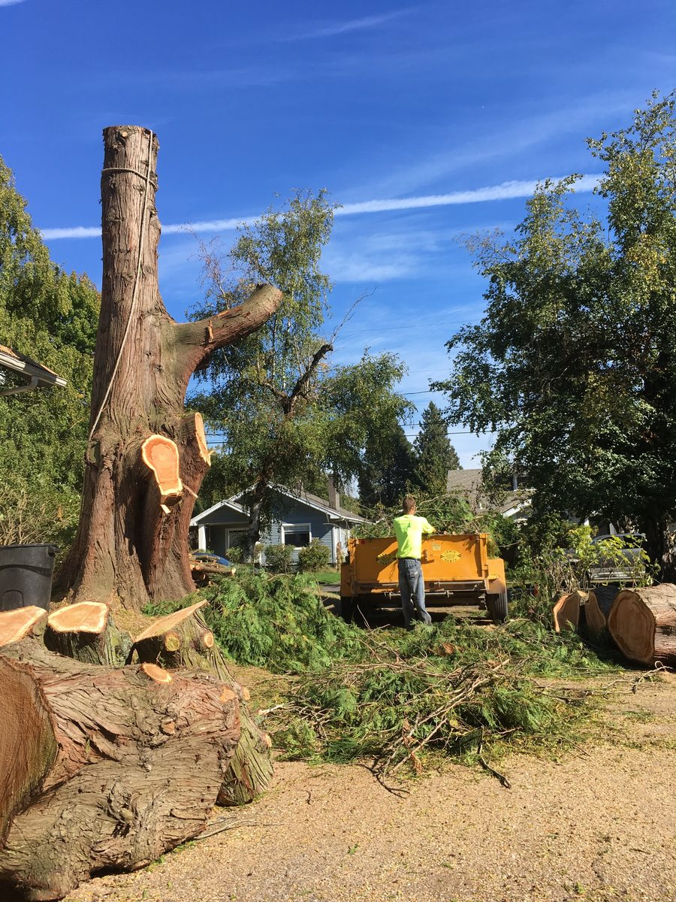
Once the canopy's down, the real cleanup starts. Brush goes through the chipper on site — nothing sits in the yard longer than it has to.
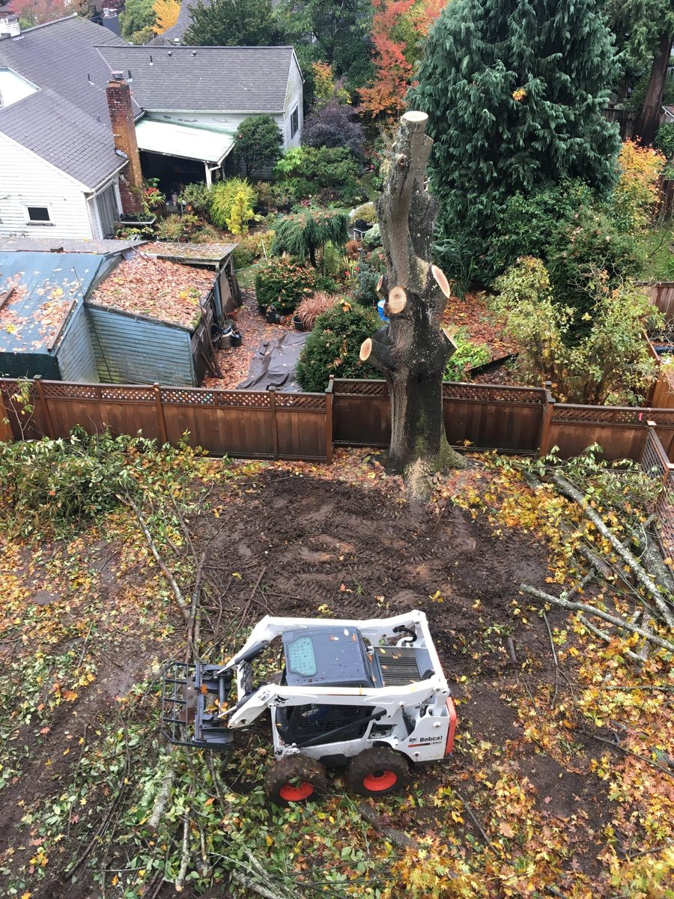
An aerial look at a trunk being sectioned down, skid-steer staged and ready to haul. Autumn color aside, this is a normal Tuesday.
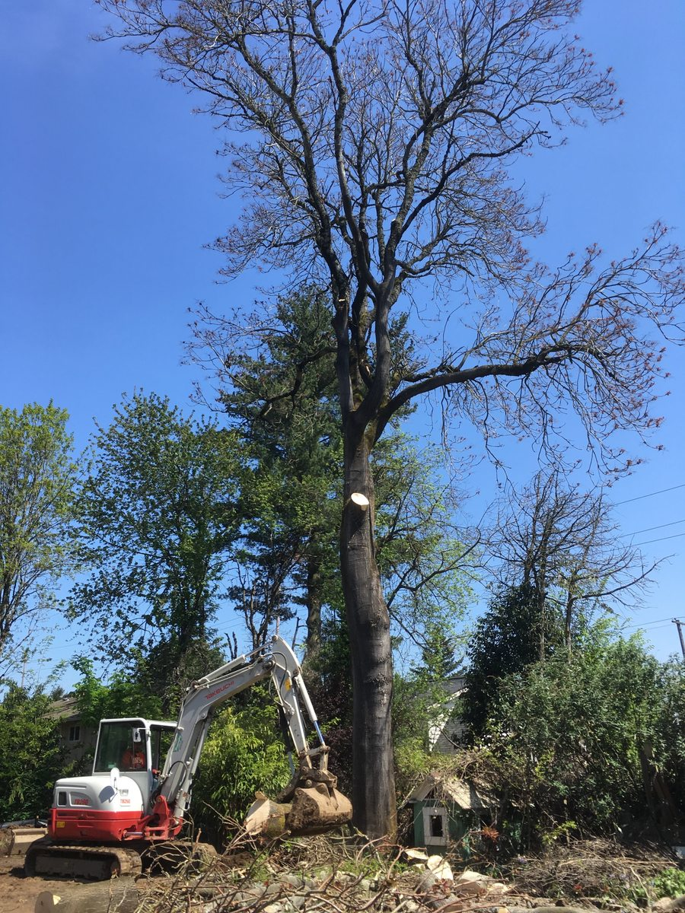
Not every section gets carried by hand. A grapple attachment does the heavy lifting once a piece is too big or too awkward to move safely on foot.
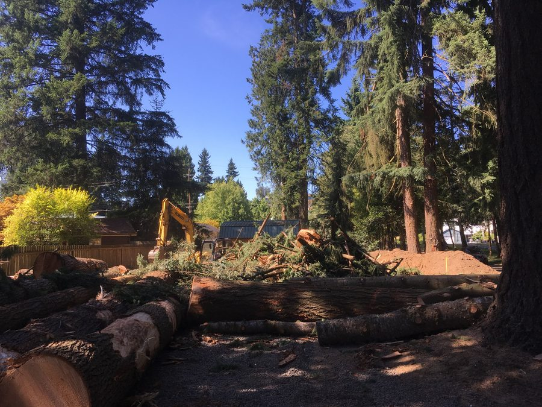
Scale matters. A tree this size doesn't come down in one piece — it comes down in sections, each one planned before the first cut.
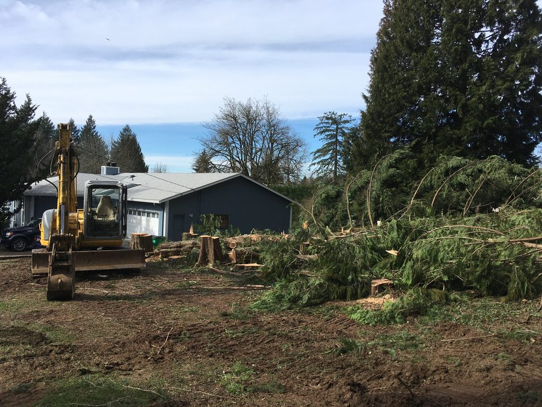
A full row of mature conifers, cleared back to open ground. Heavy equipment earns its keep on jobs like this.
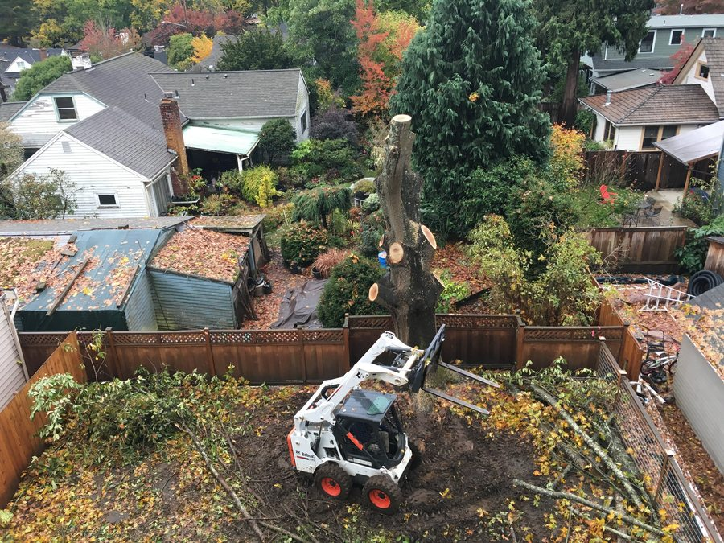
A different property, the same equipment doing the same job — staged, careful, and fenced off from the neighbors while the work gets done.
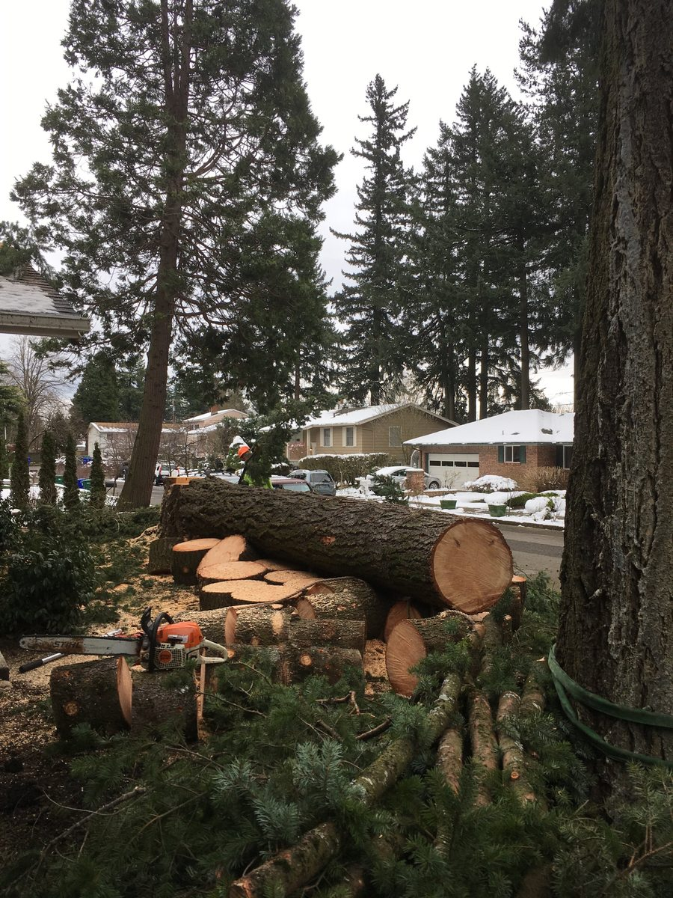
Snow on the roofs, sections on the ground. Storm calls don't wait for better weather, and neither do we.
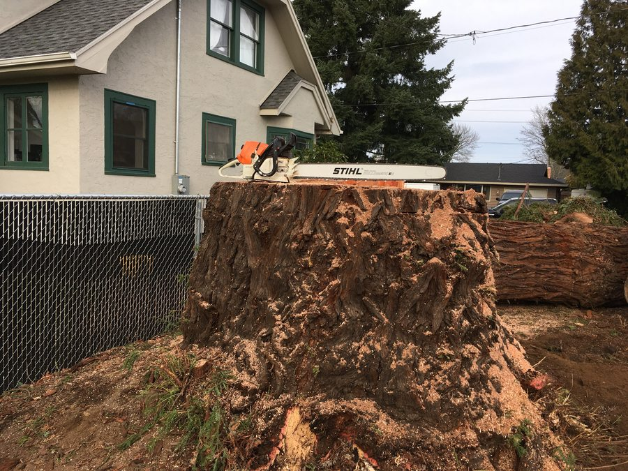
The chainsaw on top isn't there by accident — it's the easiest way to show just how big this one actually was.
Have something similar on your property?
Run a Ballpark Estimate